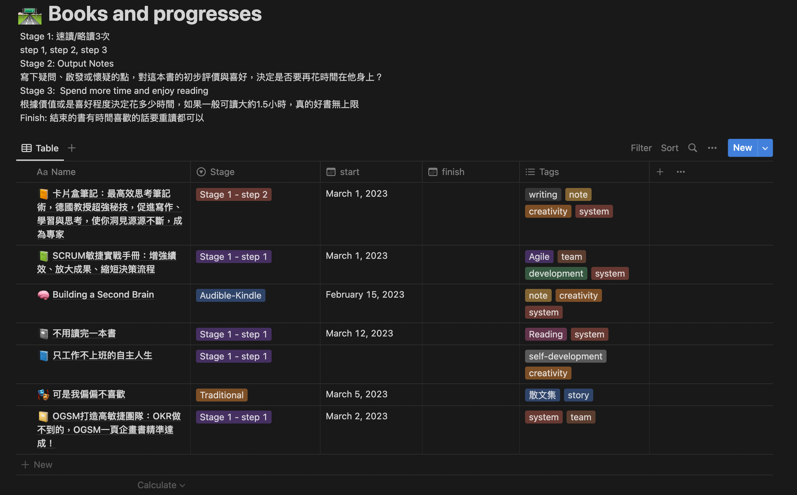

我在遇到困難和人生卡關的時候會特別想看書，對小時候的我來說，一部分是讓字體逃到文字和故事裡去，再長大一點，是意外的發現書裡找得到解決方案或是得到轉換視角的啟發，因為看書而發現了原本沒想過的面相、沒見過的選項。
最近才發現原來閱讀對我來說就是很現實很實際的解決問題工具，這也導致了我在人生順遂的時候，多半是沒什麼讀書慾望的，寧可去玩和耍廢。 不過也是在去年底開始的大撞牆期：情緒、家人、生老病死、職涯不如預期…等等，可以說是風波不斷的幾個月。也許是因為這樣的逆境，狀況越差的時候我也越自然的跑圖書館、買書、借書，反射性地去翻書找答案，也很幸運的在這些書當中因為種種故事的分享或者具體的行動方法，讓我穩住陣腳，關關難過關關過。
這個經歷讓我想到，如果書和知識是工具，多讀書和主動式的主題閱讀，就好像組一個急救醫藥箱放家裡一樣。 我們很多時候再遇到人生中的困難會慌亂，多半是因為沒有經驗、不知道接下來會發生什麼事，因為害怕、恐懼和驚嚇，常常會導致我們當下呆掉，做不出有幫助的反射動作。 如果說可以有計劃有策略的來超前部署，那麼就像家裡有準備一個急救醫藥箱一樣，或許有機會在未來的人生危機當中，讓我們當下可以知道自己有急救辦法和應急的選擇，不只增加平安度過的機會，心情上也會比較安心一點。
以上這些是我今年訂下要讀50本書（以上）的原因，但要達成目標需要有具體可行的策略，尤其這種之前沒做過的事情。 訂出可微調的策略並且在實際執行的前幾週，依照實際生活中遇到的狀況來調整修正，關鍵是讓這件事情在做的時候阻力更小，遇到困難的時候自己不會擺爛放棄。
目前有幾個主題是我生活中關心的事情：
也就是說，在達到今年50本書的目標當中，大約會有八成是以上主題的選書，其他我也想留一些娛樂性質的閱讀，像是小說或散文集之類的，就留個20%來隨緣相遇吧！
我其實是一個看書很慢的人，如果用傳統一字一句的閱讀方式，看完一本書大約要6-10個小時，之前前意外翻到這本書《至死不渝的高速閱讀法》（以下簡稱三次閱讀法），它讓我印象最深刻的部分是把閱讀比作抽籤或買樂透，而且並不是每本書都會對自己有價值，但如果有效率的多抽幾次簽，那抽中大獎的機率才會提高；因此保持閱讀的速度和效率讓生活中可以長期保持高速閱讀是很重要的，具體的方法就是給定有限的時間（例如30分鐘，可以因人而異）分三次做三個階段的閱讀：第一次時間最短的翻閱過去；第二次大約10-15分鐘的重點略讀，有感受或疑問的地方摺頁並且用藍筆畫起來；第三次就只針對摺頁和畫記的地方重新讀一次。最後，讀完之後花點時間寫個輸出筆記，記錄這本書帶給自己的影響和新觀念是什麼？
當然了，實際執行我還是有加入一些自己的觀點和嘗試，一來有時間的時候，好好慢慢讀書對我還是有些療癒的效果，這部分我融合的做法是，如果照上面的翻過3次我仍評價是本好書的話，有空就拿來隨意的慢讀第4次、第5次，看有沒有什麼漏網的智慧？
對於純享受的小說，像是前陣子看了三體前兩集，我也是用傳統方式一字一句慢慢看，倒也覺得蠻好的，不用急。
然後我聽Audible也有一陣子了，有些英文書用聽的體驗還不錯，加上我最近發現如果Kindle電子書和Addible有聲書同時買的話，他可以自動同步進度！！也就是説看一看可以改成用聽的，聽一聽可以切換到Kindle用看的！超級方便！
因為三月開始上班了，通勤時間單趟就要一個多小時，實測一週發現正常上班時間如果不是提早一點去搭車還是有可能沒有位子坐，站著通勤的狀況下，戴耳機聽podcast或聽書會是比較好的選擇，或是用手機或Kindle看電子書也還行，但眼睛會需要休息就是了。
我依照書籍的種類和閱讀方式區分為以下幾種：
兩週聽一本，目前還有幾個月下來沒聽完的點數和一些庫存的書，就利用通勤時間用聽的慢慢累積。 有聲書一本大約6~10幾小時不等，如果每天利用通勤的1小時來聽，快的話一週，慢的話兩週也能聽完一本。
一個月固定買2本書，用三次閱讀法去抓重點、寫輸出筆記。 如果是圖書館借的書，礙於無法摺頁畫記，可能需要做些取捨，更粗略地略讀或是搭配便利貼等工具，來轉化成效。反正重點是吸收的內容和留下的輸出筆記，這部分實驗看看再來微調。
純樂趣式的閱讀，可以是小說散文或是主題閱讀的書單，也可以根據到時候自己生活中遇到的難題或需求去選擇。 我有試過電子書在讀的時候比較難應用三次閱讀法，翻頁和畫重點時候會比較慢，不過帶著搭捷運還是電子書方便多了，先這樣試試看吧！
由於三次閱讀法跟練琴很像，比較起來一天內去翻閱三次，或是分三天來做，依照大腦學習吸收的效果，會是分三天的較好，因此時做了一個月之後，我用Notion做了這個database來追蹤進度和成果，也方便自己在同時追好幾本書的進度時可以累積閱讀狀態和隨時加上這些書的心得或筆記。

最後，最近開始在玩Notion AI，剛剛試著把這篇文章丟進去叫AI幫我生摘要，所以這篇載點進來之前的簡介是AI寫的，哈哈！